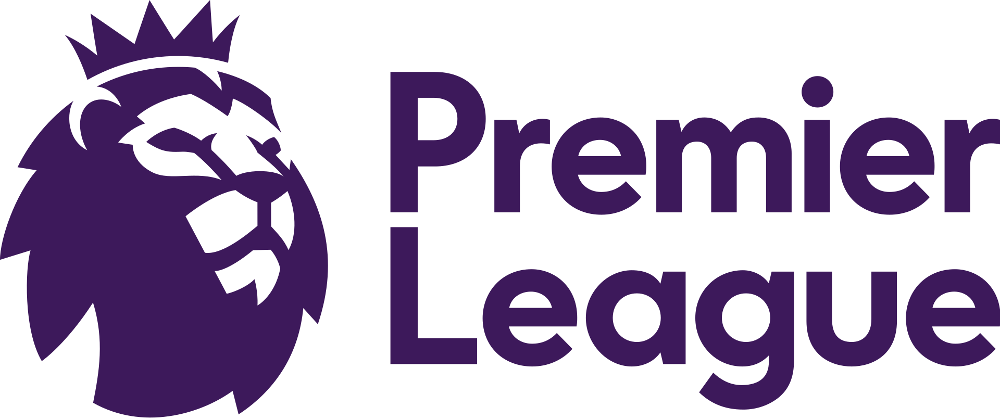

Premier League este o competiție profesionistă pentru cluburi de fotbal, localizată în primul eșalon al sistemului de ligi ale fotbalului englez. Disputată de 20 de cluburi, se bazează pe un sistem de promovare și retrogradare în Football League. Sezonul începe în august și se termină în mai. Fiecare echipă dispută câte 38 de meciuri, ajungându-se la 380 de meciuri într-un sezon. Multe dintre meciuri au loc sâmbăta și duminica. A fost cunoscută ca The Premiership din 1993 până în 2007. Este una dintre cele mai valoroase competiții din punct de vedere fotbalistic.
Site-ul oficial al competiției este http://www.premierleague.com/
Logo-ul actual al competiției este cel de mai jos.
Cele mai importante detalii la momentul actual:
| Participanți | 20 |
| Campion | Manchester City (2022-2023) |
| Cele mai multe trofee | Manchester United (20 titluri) |
| Cele mai multe apariții | Gareth Barry (653) |
| Cele mai multe goluri | Alan Shearer (260) |
| Televizări (în România) | Digi Sport, Prima Sport, Orange Sport |
În Premier League sunt 20 de cluburi. Pe parcursul unui sezon (din august până în mai), fiecare club joacă de două ori cu celelalte (sistem dublu round-robin), o dată pe stadionul de acasă și o dată pe cel al adversarilor, timp de 38 de jocuri. Echipele primesc trei puncte pentru o victorie și un punct pentru o remiză. Nu se acordă puncte pentru o pierdere. Echipele sunt clasate după numărul total de puncte, apoi diferența de goluri și apoi golurile marcate. Dacă sunt încă egale, se consideră că echipele ocupă aceeași poziție. Dacă există egalitate la campionat, la retrogradare sau la calificarea la alte competiții, se ia în considerare bilanțul cap-la-cap între echipele aflate la egalitate (puncte înscrise în meciurile dintre echipe, urmate de goluri în deplasare în acele meciuri.) Dacă două echipe sunt încă la egalitate, un meci de play-off într-un loc neutru decide clasamentul.
Între Premier League și EFL Championship există un sistem de promovare și retrogradare. Cele trei echipe cel mai jos clasate în Premier League sunt retrogradate în Championship, iar primele două echipe din campionat promovate în Premier League, cu o echipă suplimentară promovată după o serie de play-off care implică a treia, a patra, cluburile de pe locurile cinci și șase. Numărul de cluburi a fost redus de la 22 la 20 în 1995, când patru echipe au retrogradat din ligă și doar două echipe au promovat. Primul nivel a fost extins la 22 de echipe doar la începutul sezonului 1991-1992 - anul anterior formării Premier League.
La 8 iunie 2006, FIFA a cerut ca toate ligile europene majore, inclusiv Serie A din Italia și La Liga din Spania, să fie reduse la 18 echipe până la începutul sezonului 2007-2008. Premier League a răspuns anunțând intenția lor de a rezista unei astfel de micșorări. În cele din urmă, sezonul 2007–08 a început din nou cu 20 de echipe.
Arbitrul asistent video (VAR), a fost introdus în Premier League la începutul sezonului 2019-20. Utilizează tehnologia și oficialii pentru a ajuta arbitrul să ia decizii pe teren. Cu toate acestea, utilizarea sa a fost întâmpinată cu recepții mixte din partea fanilor și experților, unii lăudând acuratețea, în timp ce alții critică impactul său asupra fluxului jocului și consecvenței luării deciziilor.
Arbitrul de pe teren ia în continuare decizia finală, dar VAR îl poate ajuta pe arbitru în procesul decizional. VAR poate fi folosit doar pentru patru tipuri de decizii: goluri, decizii de penalizare, incidente directe cu cartonașe roșii și cazuri de identitate greșită. Oficialii VAR analizează filmările video și comunică cu arbitrul de pe teren prin intermediul unui set cu cască. Oficialii VAR sunt localizați într-o cameră de control centrală, care este echipată cu mai multe unghiuri de cameră și capacitatea de a reda filmările la viteze diferite.
Otto Kolbinger și Melanie Knopp au realizat un studiu de evaluare a recepției VAR de către fani în Premier League și a fost realizat prin analiza datelor de pe Twitter. Cercetătorii au folosit analiza sentimentelor pentru a măsura atitudinile generale pozitive sau negative față de VAR, precum și modelarea subiectelor pentru a identifica problemele specifice pe care fanii le discută legate de VAR. Studiul a constatat că recepția VAR pe Twitter este în mare măsură negativă, fanii exprimându-și frustrarea și criticile cu privire la impactul tehnologiei asupra fluxului jocului și a inconsecvenței deciziilor. Cercetătorii au identificat, de asemenea, probleme specifice, cum ar fi handbalul și deciziile de offside, pe care fanii le critică în mod deosebit. Studiul concluzionează că VAR nu a fost bine primit de fani din Premier League și că sunt necesare eforturi pentru îmbunătățirea tehnologiei și creșterea transparenței în luarea deciziilor pentru a aborda aceste preocupări.